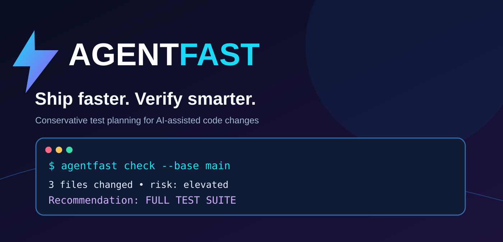

Ship faster.
Verify smarter.
Explainable change-impact guidance for JavaScript, TypeScript, React and selected Astro/workspace projects. Find fast feedback tests without skipping required full CI.

Concept illustration; AgentFast recommends tests, it does not execute them.
Verification without guesswork.
Local analysis, transparent decisions, no remote source upload.
Changed, staged, unstaged, renamed and untracked files — from your existing repository.
Schema migrations, authentication, payments and configuration changes trigger more conservative checks.
Suggest directly and transitively related tests when a static dependency graph provides enough evidence.
One command. Clear next step.
Designed to work with Codex, Claude Code, GitHub Actions and regular development workflows.
10 minutes. Real feedback.
Run the disposable demo, inspect two risk decisions and tell us what AgentFast got wrong. No signup, API key or positive review required.
Engineering notes.
How to get useful feedback from AI-generated code changes without confusing fewer tests with safer software.
Two reproducible scenarios, explainable risk policies, and what the current beta gets wrong.
Open by design.
Read the source, audit the logic and contribute improvements. Real contributors and independent feedback are welcome.